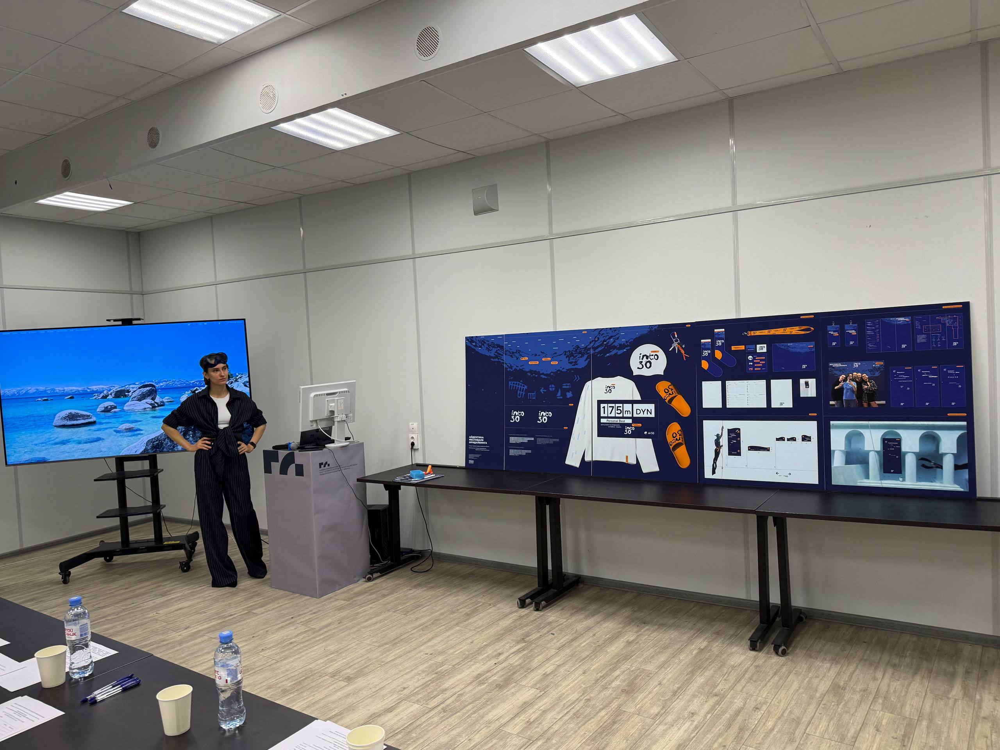
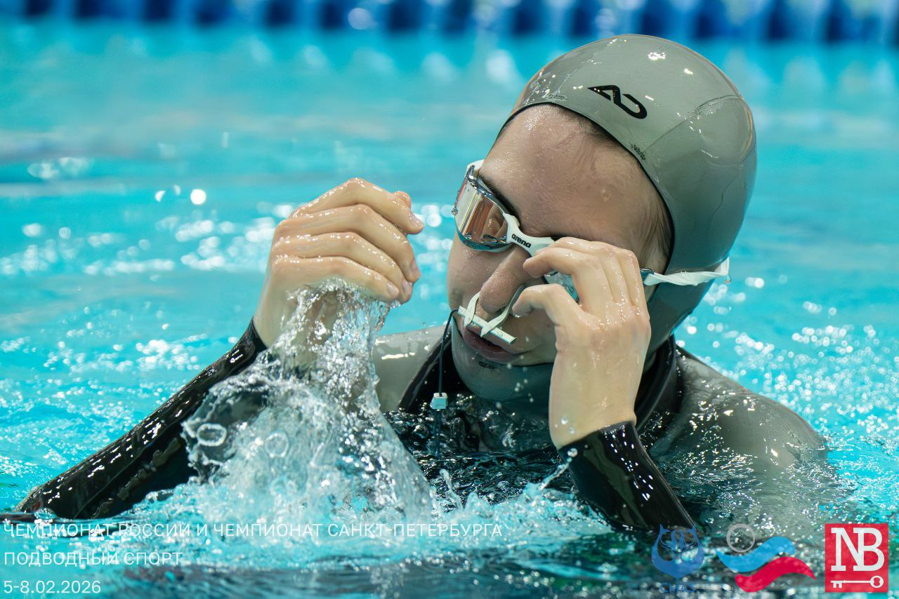
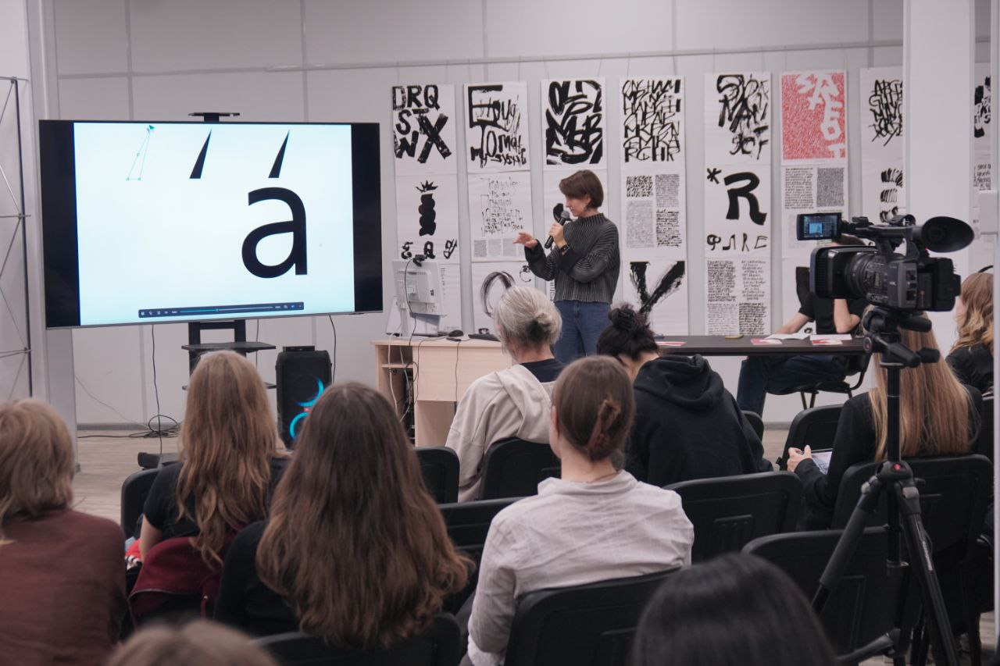

Графический дизайнер
Дарья Шорикова
Создаю айдентику, упаковку и издания: от названия и идеи до системы носителей, с которой бренд может жить дальше. Люблю, когда у графики есть точная метафора и ситемность.
Чем занимаюсь
Айдентика и фирменный стиль
Логотип, графическая система, носители, навигация. Редизайн и новые бренды, включая нейминг.
Упаковка
Продуктовая и коллекционная упаковка, обёрточная бумага, паттерны.
Книги и издания
Концепция, макет, вёрстка и подготовка к печати: книги, буклеты, календари.
Шрифт и типографика
Собственный шрифт SHOR, практика в студии TypeType, доклады о типографике и диакритике.
Как я работаю
-
Погружаюсь в задачу
Разбираюсь в продукте, аудитории и конкурентах, чтобы понять, чем бренд должен отличаться от соседей.
-
Ищу идею
Нахожу образ, который объясняет бренд без лишних слов: глубина воды для фестиваля фридайвинга, луч света для юбилея Академии им. А.Л.Штиглица.
-
Собираю систему
Превращаю идею в гибкий набор элементов, который работает на любом носителе, от визитки до навигации по зданию.
-
Довожу до результата
Слежу за деталями, готовлю файлы к печати и шаблоны для команды клиента, держу сроки.
Нейросети в работе
Использую нейросети как ещё один инструмент дизайнера: чтобы быстрее проверить несколько направлений на старте, собрать референсы, сделать фактуры, мокапы и черновые визуализации, разобраться в теме клиента. Идея, композиция и финальная графика остаются за мной, а сэкономленное время уходит на то, что важнее всего: поиск сильной концепции.
Опыт и образование
- Фриланс: «Системный подход», Suslov Fine Arts
- Производственная практика в TypeType
- СПГХПА им. А. Л. Штиглица, бакалавриат
- Доклады на конференции «Графические конструкции в дизайне»
Какая я в команде
Спокойная под давлением
Фридайвинг научил не паниковать, когда сложно, и сохранять ясную голову перед дедлайном.
Ищу нестандартные ходы
Не останавливаюсь на первом очевидном решении и приношу несколько направлений.
Быстро учусь
Легко осваиваю новые инструменты и процессы, открыта к обратной связи.
Держу сроки
Умею распределять время между несколькими задачами и заранее говорю о рисках.
Инструменты
Ищу команду брендингового агентства, где смогу расти вместе с сильными проектами. Буду рада познакомиться и показать работы подробнее.
Написать на почту